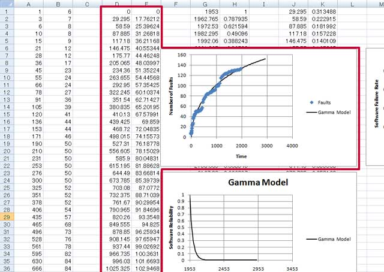
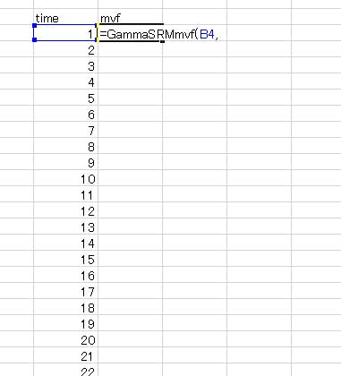
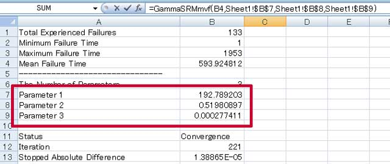
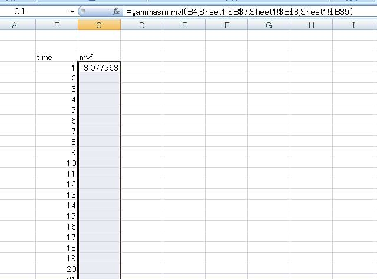
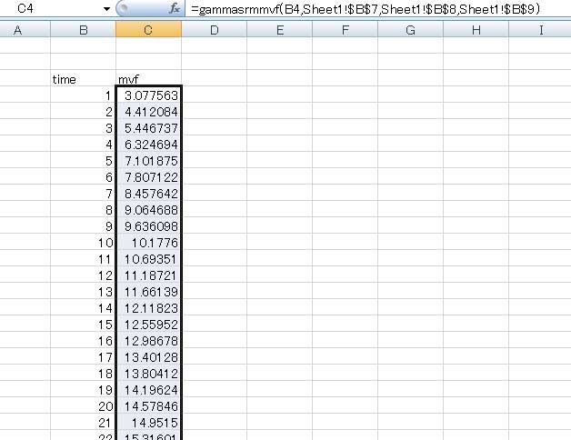
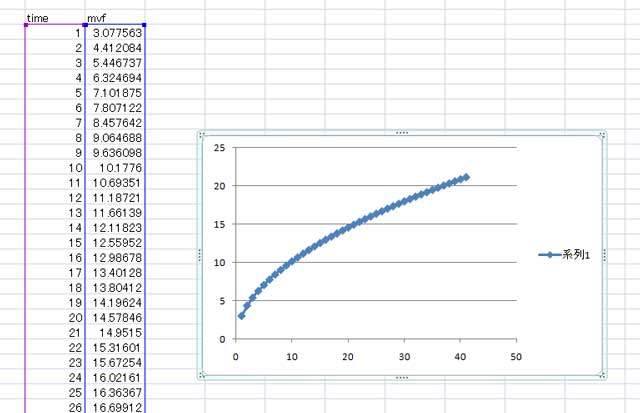

手動で平均値関数を描く
概要
SRATS2010 の応用編で，VBA の Models で定義している下記の関数を使って平均値関数を（手作業で）描く方法を紹介します．平均値関数の数学的な定義についてはこちらの PDF も参考にして下さい．
- ExpSRMmvf(time, parameter1, parameter2): 指数分布モデルの平均値関数を計算する
- GammaSRMmvf(time, parameter1, parameter2, parameter3): ガンマ分布モデルの平均値関数を計算する
- ParetoSRMmvf(time, parameter1, parameter2, parameter3): パレート分布モデルの平均値関数を計算する
- TruncNormalSRMmvf(time, parameter1, parameter2, parameter3): 切断正規分布モデルの平均値関数を計算する
- LogNormalSRMmvf(time, parameter1, parameter2, parameter3): 対数正規分布モデルの平均値関数を計算する
- TruncLogistSRMmvf(time, parameter1, parameter2, parameter3): 切断ロジスティック分布モデルの平均値関数を計算する
- LogLogistSRMmvf(time, parameter1, parameter2, parameter3): 対数ロジスティック分布モデルの平均値関数を計算する
- TruncEVMaxSRMmvf(time, parameter1, parameter2, parameter3): 切断最大値分布モデルの平均値関数を計算する
- LogEVMaxSRMmvf(time, parameter1, parameter2, parameter3): 対数最大値分布モデルの平均値関数を計算する
- TruncEVMinSRMmvf(time, parameter1, parameter2, parameter3): 切断最小値分布モデルの平均値関数を計算する
- LogEVMinSRMmvf(time, parameter1, parameter2, parameter3): 対数最小値分布モデルの平均値関数を計算する
この例の，前提条件としてガンマ分布モデル（GammaSRM）の推定結果が Report として出力されている状況を考えます．下の画面は実際にガンマ分布モデルのグラフシートで，赤で囲んだデータとグラフが平均値関数に関するデータとグラフです．

SRATS2010 では Report 出力時に，このグラフを描きますが，ここの例では推定結果（推定されたパラメータ）を使って手動でこのグラフを描く方法を紹介します．
平均値関数の計算・グラフ
まず適当なシートに時間列を入力します（図２）．図２では１刻みで平均値（期待累積発見バグ数）を計算しますので，time のコラムに 1, 2, ... と入力しています．

次に，平均値を描きたいモデルの関数を隣のセルに入力します．この場合は，ガンマ分布モデルの平均値を描きたいので GammaSRMmvf の関数を使います．これは SRATS2010 内の標準モジュールの Models で定義した関数です．一番最初の引数は時間（累積時間）なので，隣のセルを指定します．

GammaSRMmvf は 4 つの引数をとり，最初の引数が時間，残り 3 つがガンマ分布モデルのパラメータになります（モデルの PDF を参照）．3 つのパラメータは SRATS2010 が推定・レポート出力したパラメータを使います．具体的には，SRATS2010 で出力したパラメータシートに parameter1, parameter2, parameter3 があるので，そのセルを参照させれば良いことになります（図４）．ただし，セルをコピーする際に不都合が生じるので，ここでは絶対参照を使用しています．

このようにすると，時刻１の時の平均値（平均累積バグ数）が計算できます（図５）．このセルを（相対・絶対参照に注意して）コピーすることで，各累積時間に対する平均値が算出できます（図６）．これを散布図を使ってプロットすることで，平均値関数のグラフを手動で作ることができます（図７）．



Last Updated (Monday, 31 May 2010 16:13)